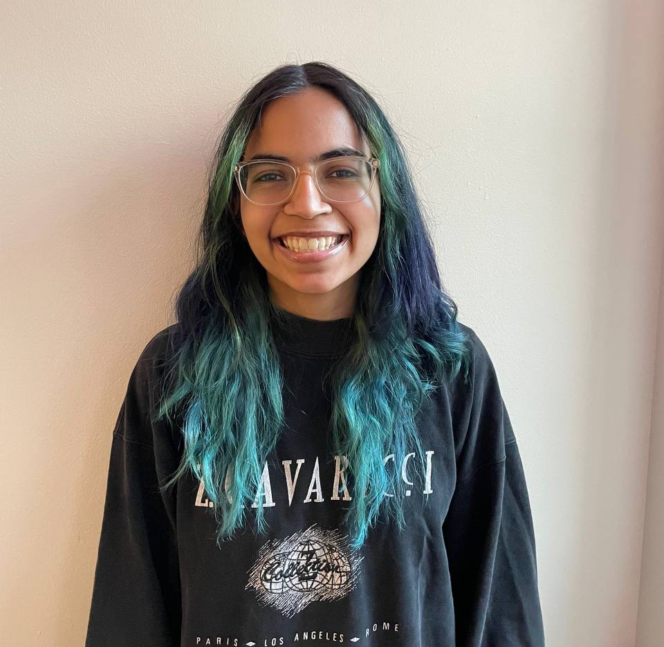

I am currently seeking to expand my work experience. Specifically, I am interested in applying my technical skillset to software solutions that ultimately aide our communities. I am currently employed as a web developer for Kelsey Piepers enviromental research lab at Northeastern. There, we work to create a site that effectively communicates science research to under-reached communities. At Northeastern, I am involved in WRBB -- the schools radio station -- as a radio co-host and co-run weekly Tetris club meetings.
// here is a picture of me!

Messages content